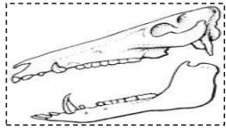
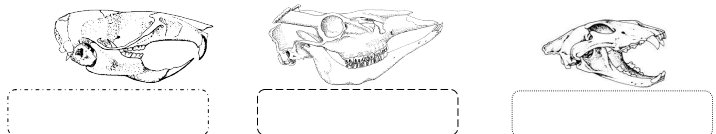
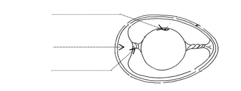
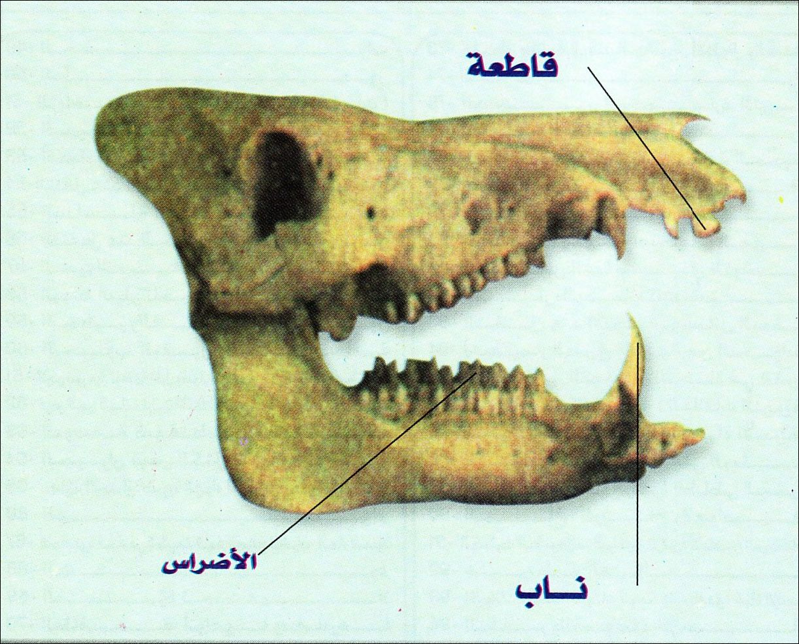
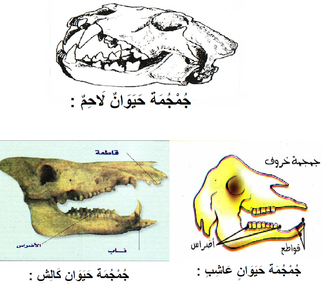
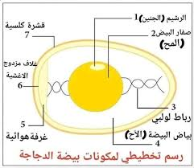

فرض تأليفي عدد 3 في علوم الحياة والأرض
المدرسة الإعدادية : ببوزقام القصرين
المستوى : الثامنة أساسي - الأستاذ : حاتم لباوي
السنة الدراسية : 2013 / 2014
العلامة : 20 نقطة
تعليمات عامة
- أجب بدقة على الأسئلة المطروحة
- اعتن بجودة الخط وتنظيم الإجابة
- الرسوم والبيانات يجب أن تكون واضحة ومقروءة
- انتبه إلى توزيع النقاط بين مختلف الأسئلة
التمرين الأول (6 نقاط)
1. عرّف الفلاحة البيولوجية. 1 نقطة
الفلاحة البيولوجية هي:
2. ما هي فوائد الفلاحة البيولوجية؟ 1.5 نقطة
3. أكمل الجدول التالي: 1.5 نقطة
| ممارسات الفلاحة العصرية | ممارسات الفلاحة البيولوجية |
|---|---|
| استعمال مبيدات الفطريات المسببة للأمراض | |
| استعمال حشرات الدعسوقة المفترسة | |
| الاعتماد على الاقتلاع اليدوي والميكانيكي | |
| استعمال سماد النيترات المصنع |
4. فسّر كيف تتسبب الأسمدة الكيميائية المصنعة في تلوث المائدة المائية. 1 نقطة
5. أذكر 3 فوائد من زراعة نبات الفول أو الجلبان. 1 نقطة
التمرين الثاني (4 نقاط)
يمثل الرسم التوضيحي التالي رسما توضيحيا لجمجمة حيوان.

الوثيقة : جمجمة حيوان (صورة توضيحية)
1. تعرّف على النظام الغذائي لهذا الحيوان. 1 نقطة
النظام الغذائي:
2. علّل إجابتك. 1 نقطة
3. فسّر كيف يتكيف هذا الحيوان مع غذائه. 1 نقطة
4. تعرّف على الأنظمة الغذائية لهذه الحيوانات: 1 نقطة

الوثيقة : حيوانات مختلفة
| الحيوان | النظام الغذائي |
|---|---|
| أ- | |
| ب- | |
| ج- |
التمرين الثالث (5 نقاط)
1. اذكر سببين يجعلان من تربية الدجاج بالطريقة التقليدية لا تفي بحاجة المستهلك. 1.5 نقطة
2. فسّر أهمية تقريب الحيوان من غذائه في تحسين الإنتاج الحيواني. 1 نقطة
3. فسّر مستعينا بأمثلة، أهمية انتقاء السلالات في تحسين الإنتاج الحيواني. 1.5 نقطة
4. أكمل الجملة التالية: 1 نقطة
السلالة هي مجموع من نفس وتتميز بصفة تنتقل عبر
التمرين الرابع (5 نقاط)
1. أكمل بيانات الرسم التوضيحي التالي: 1.5 نقطة

الوثيقة : رسم توضيحي (أكمل البيانات)
| الرقم | البيان |
|---|---|
| 1 | |
| 2 | |
| 3 |
2. أكمل الجدول التالي (ظروف التفريخ): 1.5 نقطة
| التجربة | النتيجة | الاستنتاج |
|---|---|---|
| نحضن بيضا في الثلاجة (حرارة 4 °م) | لا يفقس | |
| نطلي بيضا بالدهن ثم نحضنه في عش دجاجة | ||
| لا يفقس | الرطوبة ضرورية للتفريخ |
3. قمنا بوزن القشرة الكلسية قبل الحضن (5 غرام) وبعد التفقس (3 غرام). ما هو سبب انخفاض وزن القشرة الكلسية طيلة الحضن؟ 1 نقطة
4. ما هو دور القشرة الكلسية في التفريخ؟ 1 نقطة
الإصلاح النموذجي المفصل
التمرين الأول (6 نقاط)
1. تعريف الفلاحة البيولوجية 1 نقطة
الإجابة الصحيحة:
الفلاحة البيولوجية هي نظام إنتاج زراعي يعتمد على احترام التوازنات الطبيعية والأنظمة البيئية، يمنع استعمال المواد الكيميائية المصنعة (أسمدة معدنية، مبيدات حشرية، مبيدات فطريات) ويستعمل بدلها الأسمدة العضوية الطبيعية والمكافحة البيولوجية والمداورة الزراعية، بهدف الحفاظ على صحة التربة والمستهلك والبيئة.
التنقيط: 1 نقطة كاملة إذا تضمن التعريف: احترام التوازنات الطبيعية + منع المواد الكيميائية + استعمال البدائل الطبيعية. تقبل الصياغات المختلفة شريطة وضوح المعنى.
2. فوائد الفلاحة البيولوجية 1.5 نقطة
الإجابة الصحيحة (تُقبل أي ثلاثة من الفوائد التالية):
- حماية البيئة: عدم استعمال المواد الكيميائية يحد من تلوث التربة والماء والهواء.
- إنتاج مواد غذائية صحية: خالية من المخلفات الكيميائية الضارة بصحة الإنسان.
- المحافظة على خصوبة التربة: استعمال الأسمدة العضوية والمداورة الزراعية يحافظ على بنية التربة ويثريها.
- حماية التنوع البيولوجي: عدم استعمال المبيدات يحمي الحشرات النافعة والكائنات الحية المساعدة.
- ترشيد استهلاك الموارد الطبيعية: اعتماد على مصادر طبيعية متجددة.
التنقيط: 0.5 نقطة لكل فائدة صحيحة (المجموع 1.5 نقطة).
3. إكمال الجدول 1.5 نقطة
الإجابة الصحيحة:
| ممارسات الفلاحة العصرية | ممارسات الفلاحة البيولوجية |
|---|---|
| استعمال مبيدات الفطريات المسببة للأمراض | المكافحة البيولوجية باستعمال كائنات حية مفترسة أو مضادة للفطريات |
| استعمال مبيدات الحشرات الكيميائية | استعمال حشرات الدعسوقة المفترسة |
| استعمال مبيدات الأعشاب الكيميائية | الاعتماد على الاقتلاع اليدوي والميكانيكي |
| استعمال سماد النيترات المصنع | استعمال الأسمدة العضوية الطبيعية (الكمبوست، السماد الحيواني، الأسمدة الخضراء) |
التنقيط: 0.5 نقطة لكل خلية مملوءة بشكل صحيح (المجموع 1.5 نقطة على 3 خلايا مطلوبة).
4. تفسير تلوث المائدة المائية بالأسمدة الكيميائية 1 نقطة
الإجابة الصحيحة:
الأسمدة الكيميائية المصنعة (مثل النيترات والفوسفات) تذوب في مياه الري والأمطار وتتسرب إلى الطبقات العميقة من التربة عبر عملية الرشح لتصل إلى المائدة المائية الجوفية. ارتفاع نسبة النيترات في المياه الجوفية يجعلها غير صالحة للشرب، وقد تسبب أمراضا خطيرة مثل الميتهيموغلوبينيميا (المرض الأزرق) عند الأطفال الرضع، كما تساهم في ظاهرة الإثراء الغذائي (التخثث) للمسطحات المائية.
التنقيط: 1 نقطة كاملة إذا تضمنت الإجابة فكرة الذوبان + التسرب إلى المياه الجوفية + تأثير سلبي على جودة المياه.
5. فوائد زراعة الفول أو الجلبان 1 نقطة
الإجابة الصحيحة:
- تثبيت الآزوت الجوي: بفضل البكتيريا العقدية (Rhizobium) التي تعيش في جذورها وتشكل عقدا جذرية تحول الآزوت الجوي إلى أملاح آزوتية تغني التربة.
- تحسين خصوبة التربة: إثراء التربة بالمواد العضوية والآزوت مما يفيد المحاصيل اللاحقة في الدورة الزراعية.
- توفير غذاء غني بالبروتينات: للإنسان (الفول والجلبان من البقوليات الغنية بالبروتين النباتي) وللحيوان (كعلف).
التنقيط: 0.33 نقطة لكل فائدة صحيحة (تُقبل 3 فوائد للحصول على 1 نقطة كاملة).
التمرين الثاني (4 نقاط)
1. النظام الغذائي للحيوان 1 نقطة

الوثيقة : جمجمة حيوان (صورة توضيحية)
النظام الغذائي: قارت (كَالِش / Omnivore)
الجُمجمة تعود لحيوان يأكل اللحوم والنباتات معاً، مثل الخنزير.
2. تعليل الإجابة 1 نقطة
التعليل:
- وجود أنياب متوسّطة الحجم تسمح بتقطيع اللحوم وتمزيقها، لكنها ليست بنفس حدّة الأنياب لدى اللواحم المتخصّصة.
- وجود أضراس طاحنة ذات نتوءات مستديرة (أضراس بنية) قادرة على طحن المواد النباتية (حبوب، جذور، ثمار) وسحق اللحوم معاً.
- وجود قواطع أمامية تساعد في قضم الأغذية الصلبة، وتنوّع الأسنان يعكس نظاماً غذائياً مختلطاً.
3. تفسير تكيف الحيوان مع غذائه 1 نقطة
التفسير:
يتكيّف هذا الحيوان القارت (الكَالِش) مع نظامه الغذائي المزدوج بفضل بنية أسنانه المتنوّعة: الأنياب تمكّنه من تمزيق اللحوم عند توفّر الفرائس أو الجيف، والأضراس العريضة ذات السطح الطاحن تساعده على طحن النباتات والبذور والجذور بقوّة. كما أن حركة الفكّ الجانبية والدائرية تمكّنه من مضغ الطعام بكفاءة سواء كان لحمياً أم نباتياً. هذا التنوّع في الأدوات الفموية يجعله قادراً على استغلال مصادر غذائية مختلفة حسب الموسم والبيئة، وهي ميزة أساسية للحيوانات القارتة.
4. الأنظمة الغذائية للحيوانات 1 نقطة

الوثيقة : الأنظمة الغذائية مع التصحيح
| الحيوان | النظام الغذائي |
|---|---|
| أ- الأسد | لاحم (Carnivore) - يتغذى على اللحوم |
| ب- البقرة | عاشب (Herbivore) - يتغذى على الأعشاب والنباتات |
| ج- الدب أو الإنسان | قارت (Omnivore) - يتغذى على اللحوم والنباتات معا |
التنقيط: حوالي 0.33 نقطة لكل نظام غذائي صحيح.
التمرين الثالث (5 نقاط)
1. سببان لعدم كفاية التربية التقليدية للدجاج 1.5 نقطة
الإجابة الصحيحة:
- الإنتاج المحدود والبطيء: الدجاج البلدي في التربية التقليدية ينمو ببطء وينتج عددا قليلا من البيض (حوالي 80-120 بيضة سنويا) مقارنة بالسلالات المحسنة (أكثر من 280 بيضة سنويا)، مما لا يفي بحاجة السوق المتزايدة.
- التربية الموسمية المرتبطة بالظروف الطبيعية: إنتاج الدجاج التقليدي يتراجع في فترات البرد أو الحر الشديد، مما يسبب عدم استقرار في توفير المنتوج للمستهلك طيلة السنة.
- عدم التحكم في الأمراض: غياب المتابعة البيطرية والتلقيح يجعل الدجاج عرضة للأمراض مما يقلص الإنتاج.
التنقيط: 0.75 نقطة لكل سبب صحيح مع الشرح (المجموع 1.5 نقطة).
2. أهمية تقريب الحيوان من غذائه 1 نقطة
الإجابة الصحيحة:
تقريب الحيوان من مصدر غذائه يقلص تكاليف النقل ويخفض سعر المنتوج النهائي، كما يضمن تقديم غذاء طازج للحيوان مما يحسن صحته وإنتاجيته. إضافة إلى ذلك، يسهل استغلال الموارد المحلية (كالمراعي الطبيعية والمخلفات الزراعية) ويحد من التبعية للأعلاف المستوردة، مما يساهم في تحقيق الاكتفاء الذاتي وتطوير الإنتاج الحيواني المستدام.
التنقيط: 1 نقطة كاملة للإجابة التي تذكر على الأقل فكرتين: تقليص التكاليف + تحسين جودة التغذية.
3. أهمية انتقاء السلالات في تحسين الإنتاج الحيواني 1.5 نقطة
الإجابة الصحيحة:
انتقاء السلالات هو عملية اختيار أفراد يتمتعون بصفات مرغوبة (كسرعة النمو، كثرة إنتاج البيض، مقاومة الأمراض) وتزويجها فيما بينها للحصول على سلالة محسنة. وتتجلى أهميته في:
- زيادة المردود: مثلا، انتقاء سلالات دجاج "الليغهورن" الأبيض يعطي إنتاجا مرتفعا من البيض (يتجاوز 280 بيضة سنويا) مقابل 80 بيضة للدجاج البلدي.
- تحسين جودة المنتوج: انتقاء سلالات الأبقار "الهولشتاين" لإنتاج الحليب بكميات كبيرة (تصل إلى 8000 لتر سنويا) وبجودة عالية.
- مقاومة الأمراض: بعض السلالات المنتقاة أكثر مقاومة للأمراض مما يقلص تكاليف العلاج ويرفع نسبة البقاء.
التنقيط: 0.5 نقطة لشرح المفهوم + 0.5 نقطة لكل مثال (المجموع 1.5 نقطة).
4. إكمال الجملة 1 نقطة
الإجابة الصحيحة:
السلالة هي مجموع من نفس النوع وتتميز بصفة وراثية مرغوبة تنتقل عبر التكاثر (التوريث)
التنقيط: حوالي 0.33 نقطة لكل فراغ مملوء بشكل صحيح (المجموع 1 نقطة).
التمرين الرابع (5 نقاط)
1. إكمال بيانات الرسم التوضيحي 1.5 نقطة

الوثيقة : الرسم التوضيحي مع البيانات الصحيحة
| الرقم | البيان |
|---|---|
| 1 | الرشيم |
| 2 | الرباط اللولبي |
| 3 | الغرفة الهوائية |
التنقيط: 0.5 نقطة لكل بيان صحيح (المجموع 1.5 نقطة).
2. إكمال جدول ظروف التفريخ 1.5 نقطة
| التجربة | النتيجة | الاستنتاج |
|---|---|---|
| نحضن بيضا في الثلاجة (حرارة 4 °م) | لا يفقس | الحرارة المناسبة (حوالي 37-40 °م) ضرورية للتفريخ |
| نطلي بيضا بالدهن ثم نحضنه في عش دجاجة | لا يفقس | التهوئة ضرورية للتفريخ (الدهن يسد المسام ويمنع تبادل الغازات) |
| نضع بيضا في مفقس جاف بدون توفير رطوبة | لا يفقس | الرطوبة ضرورية للتفريخ |
التنقيط: 0.5 نقطة لكل خلية مملوءة بشكل صحيح (المجموع 1.5 نقطة على 3 خلايا).
3. سبب انخفاض وزن القشرة الكلسية طيلة الحضن 1 نقطة
الإجابة الصحيحة:
انخفاض وزن القشرة الكلسية من 5 غرام إلى 3 غرام أثناء الحضن يرجع إلى استخدام الجنين لأملاح الكالسيوم الموجودة في القشرة لبناء هيكله العظمي. فالجنين يمتص الكالسيوم من القشرة الكلسية عبر الأوعية الدموية الموجودة في الغشاء القشري، مما يؤدي إلى ترقق القشرة ونقصان وزنها تدريجيا مع تقدم نمو الفرخ.
التنقيط: 1 نقطة كاملة إذا تضمنت الإجابة فكرة: امتصاص الجنين للكالسيوم من القشرة لبناء العظام.
4. دور القشرة الكلسية في التفريخ 1 نقطة
الإجابة الصحيحة:
- الحماية الميكانيكية: تحمي الجنين من الصدمات والضغوط الخارجية.
- توفير الكالسيوم: مصدر أساسي لأملاح الكالسيوم التي يحتاجها الجنين لبناء هيكله العظمي.
- المسامية: تحتوي على مسامات دقيقة تسمح بتبادل الغازات (دخول الأكسجين وخروج ثاني أكسيد الكربون) الضرورية لتنفس الجنين.
- الحد من التبخر: تحافظ على رطوبة داخلية مناسبة لنمو الجنين دون أن تجف محتويات البيضة.
التنقيط: 1 نقطة كاملة إذا ذكر التلميذ دورين على الأقل (الحماية + توفير الكالسيوم أو تبادل الغازات).
ملاحظة عامة: هذا التصحيح إرشادي، وقد تختلف إجابات التلاميذ مع الحفاظ على المعايير الأساسية. المهم هو الفهم العميق للسؤال، والتحليل المنطقي، واستخدام لغة علمية سليمة، وتقديم حجج متماسكة مدعومة بالمعطيات العلمية المناسبة. يجب مراعاة الدقة في المصطلحات العلمية وجودة التعبير.